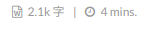

NexT主题支持MathJax渲染，只需要做一些简单的安装和配置。
Hexo的配置
1 | npm install hexo-math --save |
开启数学公式支持
第一种方法：在next主题的文件夹下的_config.yml（不是hexo文件夹下的_config.yml）找到如下语句：1
2
3# Math Equations Render Support
math:
enable: true
将enable修改为true
第二种方法：在加入了LaTeX数学公式的文章开头加入声明 mathjax: true
数学公式使用方法：在两个双dollar符中输入latex数学公式
两种配置文件的区分
站点配置文件：Hexo博客根目录下的 _config.yml
主题配置文件：./themes/主题名/_config.yml
首页置顶文章功能
1 | npm install hexo-generator-topindex --save |
通过在文章中添加 top: 数值 来设置优先值，默认优先值为0。
Markdown与MathJax冲突问题解决
网上有些做法是在写LaTeX的时候加入逃逸字符，但是这样做使得LaTeX只能在Markdown上渲染，在tex文件中还是要改回正常的状态，这样不具备拓展性。可以通过更改渲染引擎达到解决冲突的目的。
1 | npm uninstall hexo-renderer-marked --save |
hexo-renderer-marked是Hexo自带的默认渲染引擎（注意，如果使用了其他的渲染插件，请卸载对应的插件），没有针对MathJax的改进。而hexo-renderer-kramed这个渲染插件针对MathJax支持进行了改进，对于Markdown和MathJax会分别渲染。尽管如此，对于行内公式有时还是会出现误将下划线识别为 Markdown 语法的情况。这时需要参考官方文档修改 escape 字符：https://hexo-guide.readthedocs.io/zh_CN/latest/theme/[NexT]%E9%85%8D%E7%BD%AEMathJax.html
NexT主题的配置
修改字体大小 / 修改文章页面宽度
在next主题文件夹下, 进入 source/css/_variables/base.styl, 找到1
2// Font size
$font-size-base = 14px
将 14px 的大小修改为16或者18px.
修改文章页面宽度1
$content-desktop = 700px
to 800 px or larger.
图片居中显示
Hexo中使用的markdown渲染引擎为 marked. 想让图片居中显示, 可以修改主题渲染文件.
修改底部#标签为图标
网站根目录下 themes\next\layout_macro\post.swig 文件.
搜索 rel="tag">#, 将 # 替换成图标 <i class="fa fa-tag"></i>.
将阅读次数修改为热度
进入 /themes/next/layout/_macro/post.swig 文件, 搜索 LeanCloud, 在 <span class="leancloud-visitors-count"></span> 后添加 <span>℃</span>, 然后再将 /themes/next/languages/zh-CN.yml 文件中post:框下views:阅读次数 修改为 views:热度.
添加字数统计
安装字数统计插件1
npm install hexo-symbols-count-time --save
在主题配置文件中设置:1
2
3
4
5
6
7
8# Post wordcount display settings
# Dependencies: https://github.com/theme-next/hexo-symbols-count-time
symbols_count_time:
separated_meta: true
item_text_post: true
item_text_total: false
awl: 2
wpm: 275
在站点配置文件中设置:1
2
3
4
5symbols_count_time:
symbols: true
time: true
total_symbols: true
total_time: true
If you want to add the word after the counting numbers like the following:

open this file your blog dir/themes/next/layout/_macro/post.swig and find
1 | <span title="{{ __('symbols_count_time.count') }}">{# |
like this.
在 Github Pages 中添加 gitalk 评论功能
在 Github 中新建一个 OAuth Applications, 记住 client_id, client_secret. 然后在 next 主题配置文件中添加
1 | # Gitalk |
这样默认评论框就开启了，如果想关闭它，则在文章标签中设置：
comments: false
就可以了。